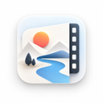

Capture your world.
Record a display or a single window. Bring system audio, your microphone, and a webcam into the same session.

Dhaicone StudioGet the studio ↗Turn a recording into something worth watching. Capture, edit, and polish your next idea in one creative studio, designed for your Mac.
Mac only. Apple Silicon. macOS 15 or later.
One workspace for the whole process.
From your first recording to the final frame.
Record a display or a single window. Bring system audio, your microphone, and a webcam into the same session.
Arrange multiple tracks, split and trim clips, make ripple edits, and adjust speed. Keep experimenting with undo and autosave.
Style your recorded cursor and turn clicks into zoom suggestions. Add text, arrows, shapes, and redaction where they matter.
Build your look with gradients, colors, image or video backgrounds. Fine-tune padding, corners, shadows, crop, and aspect ratio.
Create manual captions or use on-device speech recognition in supported system languages. Import and export SRT subtitles.
Export MP4 or GIF with control over size, frame rate, and quality. Queue exports while you keep editing, then reveal or share.
A native Mac experience designed for Apple Silicon. Keep recording, editing, and the little details that make it yours together in one workspace.
Make something with Dhaicone Studio ↗Capture a fresh take, import footage, or reopen a .dhaicone project.
Build your timeline. Add movement, captions, and your own visual style.
Save a portable project with embedded media, or export your finished story.
Made for Apple Silicon. Requires macOS 15 or later.
Browse the latest published builds and release notes.
View releases ↗All releases ↗The stable cask is published with production releases.
brew tap solvePao/tap
brew install --cask dhaicone-studioWant to test what’s next? TestFlight information ↗
An Apple Silicon Mac running macOS 15 or later. The app is built for arm64.
Yes. Import video, including MKV, or reopen native .dhaicone projects. A subset of Recordly v1/v2 project data is also supported.
Use Save Portable Project to embed linked media. Standard projects reference media at its original location.
No. Dhaicone Studio is a closed-source application, designed exclusively for Apple Silicon Macs.
Dhaicone Studio is Mac only and designed for Apple Silicon. Windows, Linux, and Intel Macs are not supported.